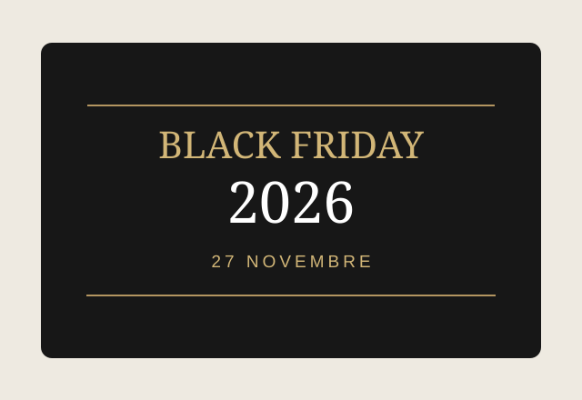

Définir son besoin
Un objet utile correspond à un usage précis. Privilégiez les fonctionnalités qui seront vraiment utilisées.
Le guide des belles découvertes
Des idées cadeaux élégantes, des innovations utiles et des équipements pour le quotidien. Prenez le temps de comparer avant d'acheter.
27 novembre 2026
Ne vous laissez pas guider uniquement par une étiquette promotionnelle. Comparez les caractéristiques et le coût total avant de choisir. Les éventuelles offres et leur disponibilité sont à vérifier directement sur Amazon.
Voir les familles de produits à surveiller →
Noël 2026
Pour les passionnés de technologie, les amateurs de café, les créatifs et ceux qui aiment embellir leur maison.
Notre sélection éditoriale
Cette sélection présente des catégories de produits, et non des offres ou des stocks garantis. Aucun test personnel n'est revendiqué.
Comparatifs pratiques
| Catégorie | À privilégier | À vérifier avant achat |
|---|---|---|
| Robot aspirateur laveur | Entretien automatique, navigation fiable | Seuils, tapis, consommables, encombrement |
| Machine à café à grains | Qualité du broyeur, nettoyage simple | Bruit, boissons proposées, coût d'entretien |
| Vidéoprojecteur portable | Luminosité adaptée à la pièce | Résolution native, connectique, recul |
| Casque audio | Confort et autonomie | Compatibilité, microphones, isolation |
| Airfryer | Capacité utile et simplicité | Dimensions, entretien, puissance |
Ce tableau constitue un guide de critères généraux, pas un classement issu de tests en laboratoire.
Méthode d'achat
Un objet utile correspond à un usage précis. Privilégiez les fonctionnalités qui seront vraiment utilisées.
Confort, compatibilité, entretien, garantie : cherchez les différences concrètes entre deux appareils.
Consultez les informations, prix, modalités de livraison et retours sur la page marchande au moment d'acheter.
Questions fréquentes
Non. Ce site propose des idées et des critères de choix. Les commandes, paiements et livraisons s'effectuent chez le vendeur.
Nous ne présentons pas de prix en temps réel. Consultez toujours le montant et les conditions directement sur la page du vendeur.
Nous ne revendiquons aucun essai personnel ni test en laboratoire. Les présentations servent de point de départ à votre comparaison.
Nous privilégions l'utilité, la simplicité d'utilisation, les critères de comparaison et la pertinence pour différentes occasions.
Une commission peut être versée au site sur les achats éligibles, sans supplément lié à cette commission pour le visiteur.
Notre philosophie
Sélection Prestige est un guide indépendant d'idées cadeaux et d'achats. Nous publions des présentations et des critères de comparaison afin d'aider les visiteurs à repérer les produits correspondant à leurs attentes. Nous ne vendons ni n'expédions les produits présentés.
En tant que Partenaire Amazon, nous réalisons un bénéfice sur les achats remplissant les conditions requises.
Certains liens pourront être des liens affiliés. Un achat éligible effectué via ces liens peut nous rapporter une commission, sans supplément lié à cette commission pour le visiteur. Les boutons de recherche présents sur cette version ouvrent actuellement une recherche Amazon non affiliée : ils seront remplacés par des liens directs affiliés après validation du compte.
Dans cette version statique du site, aucun compte visiteur, formulaire, outil de suivi publicitaire ou cookie analytique n'est intégré. L'hébergeur peut néanmoins traiter des données techniques nécessaires à la fourniture du service. Les liens vers Amazon ouvrent un site tiers soumis à sa propre politique de confidentialité. Toute intégration future de statistiques ou de marketing nécessitera une mise à jour de cette politique et, le cas échéant, un recueil du consentement.
Éditeur : identité légale, coordonnées de contact, adresse professionnelle et identifiants à compléter et vérifier avant publication. Hébergement envisagé : GitHub Pages, service de GitHub, Inc. Nature du service : guide d'achat et contenu éditorial, sans vente directe. Les marques citées appartiennent à leurs propriétaires respectifs. Responsabilité : prix, disponibilité et conditions sont ceux du marchand au moment de la consultation.
Cette rubrique est un modèle incomplet et ne doit pas être considérée comme une notice légale validée. Publication à différer jusqu'à complétion des mentions obligatoires.